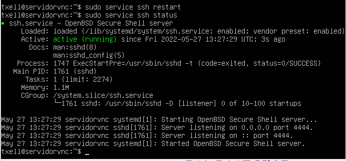
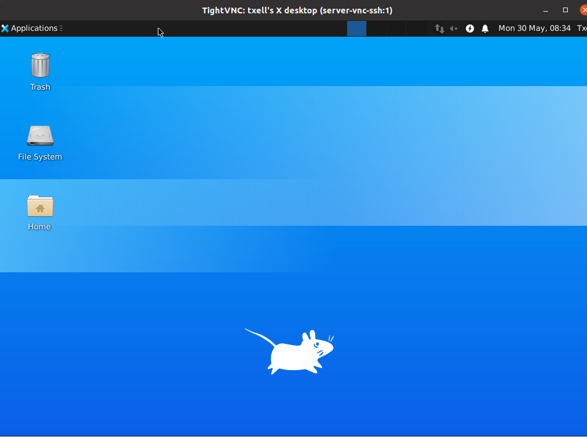

UF3 - Pràctica: VNC i SSH
Realitza un document que expliqui com configurar i realitzar una connexió VNC segura mitjançant SSH entre dues màquines virtuals Linux.
S’han de tenir en compte les següents característiques:
- El port SSH ha de ser qualsevol de la vostra elecció que NO sigui el 22. Podeu trobar com fer-ho aquí.
- Configurar la pantalla del servidor a 1024x768 i 16.777.216 colors.
- Configurar un accés de només visionat.
Al document s’ha de garantir que s’expliquen i mostren clarament els següents punts:
- Instal·lació del servidor SSH i configuració del port demanat.
- Connexió del client al servidor mitjançant SSH via usuari i password.
- Inici de sessió VNC del client al servidor mitjançant tunel SSH i connexió a l’escriptori.
Instal·lació del servidor SSH i configuració del port demanat.
- Per instal·lar el servei ssh, hi ha dues opcions:
- Pre-instal·lar el servei ssh durant la instal·lació del servidor:
- O bé, instal·lar el servei ssh després de la instal·lació mitjançant la següent comanda:
sudo apt install ssh
Per verificar la correcta instal·lació del servei, des del mateix servidor escriure la següent comanda:
sudo service ssh status

>> Active: active (running) ens indica que el servei està actiu i correctament
instal·lat.
- Per configurar el port del servei ssh diferent a l’establert per defecte:
- Editar l’arxiu de configuració de l’ssh, habilitant el port substitut del 22, que defineixo com a 4444 :
Editar l’arxiu sshd_config, canviant el port 22 pel 4444:
sudo nano /etc/ssh/sshd_config
- Reiniciar el servei per aplicar els canvis:
sudo service ssh restart
Podem verificar que el servei està actiu, escrivint de nou la comanda:
sudo service ssh status
>> Active: active (running) ens indica que el servei està actiu i correctament instal·lat.
Connexió del client al servidor mitjançant SSH via usuari i password.
- Des de la terminal de client, iniciem sessió al servidor mitjançant les següents comandes:
sudo ssh txell@10.0.2.10 -p 4444
- Instal·lar la interfície gràfica pel servidor, des del propi servidor o des del client loguejats al servidor mitjançant les comandes:
sudo apt install xfce4 xfce4-goodies xorg dbus-x11 x11-xserver-utils xrdp xfonts-base autocutsel xfonts-75dpi xfonts-100dpi
- Instal·lar el servidor TightVNC, que és un servidor de programari d'escriptori remot una i aplicació client per a Linux i Windows:
sudo apt install tightvncserver
- Executar l'ordre vncserver per establir una contrasenya d'accés, tant per:
- l’usuari d’accés total,
- com per l’usuari d’accés en mode espectador.
- Per aplicar la nova configuració:
- Parar el servei:
vncserver -kill :1
Observem que ens retorna un ID de procés diferent a l’incial.
- Abans de realitzar els canvis de configuració sobre l’arxiu original, realitzar-ne un backup:
mv ~/.vnc/xstartup ~/.vnc/xstartup.bak
- Editar l’arxiu de configuració i aplicar-li permisos d’accés:
nano ~/.vnc/xstartup
- També crearem l’arxiu Xresources, que guardarà la informació dels usuaris:
touch ~/.Xresources
- Reiniciar el servidor:
vncserver -localhost
- Configurar la pantalla del servidor a 1024x768 i 16.777.216 colors:
Per establir la configuració de pantalla pel visor del servidor, primer cal crear i editar l’arxiu següent mitjançant la comanda:
sudo nano /etc/systemd/system/vncserver@.service
I canviar la configuració de la resolució a -depth 24 -geometry 1024x768:

Inici de sessió VNC del client al servidor mitjançant tunel SSH i connexió a l’escriptori.
- Iniciar connexió remota via VNC, des de l’usuari client:
ssh -L 59000:localhost:5901 -C -N -l txell 10.0.2.15 -p 4444
- i instal·lem la interfície gràfica:
- Obrim una altra pestanya a la terminal i executem l’accés al servidor. Posem la contrasenya que ens interessi segons el tipus d’accés: si volem accedir com a usuari plenament funcional o només com a espectador.
La connexió s’ha realitzat amb èxit i ja tinc accés a l’escriptori remot del servidor:

I tinc accés als arxius de l’usuari, també:
Si obrim 2 finestres, veiem paral·lelament com es pot accedir al servidor i l’altre visualitza el que l’usuari hi fa:
Figura 1. El visor de l’esquerra pertany a l’usuari administrador. El de la dreta a l’usuari espectador.